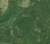
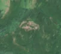

6,2 ha de pădure schimbată lângă Godinești
Între vara lui 2025 și 27 aprilie 2026, pe aproximativ 6,2 ha de pădure din comuna Gurasada, lângă Godinești, județul Hunedoara, imaginile Sentinel-2 arată că vegetația a dispărut sau s-a schimbat puternic. În registrul public există o autorizație de tăiere pentru acest loc.
Autorizația de tăiere
probabil cu autorizație
Am găsit o autorizație de tăiere pentru locul ăsta, dar registrul nu ne lasă să confirmăm că acoperă exact tăierea pe care o vedem. Amenajamentul nu publică harta parcelei autorizației, deci nu știm exact unde e. De cele mai multe ori o acoperă.
Ce se vede în poze: În poza detaliată zona marcată era acoperită de pădure deasă, iar în poza «după» apare o pată fără copaci, de culoare roz-bej, în timp ce pădurea din jur rămâne verde. Aceasta arată că arborii au fost îndepărtați de pe o suprafață mare.


Înainte și după: Copernicus Sentinel-2, 10 m pe pixel, conturul zonei cu portocaliu. Poza detaliată (Esri World Imagery) e de acum 1–4 ani: arată ce era acolo înainte, nu tăierea.
Pe scurt
- Identificator
- 20260427_46011_22556
- Locul
- Godinești, comuna Gurasada, județul Hunedoara (SIRUTA 89687)
- Coordonate (centru)
- 46.01113, 22.55629 · Google Maps · OpenStreetMap
- Suprafața
- 6,2 ha (din pixeli de 10 m; ± câțiva pixeli pe margine)
- Pădurea întreagă
- în vara lui 2025 (de atunci, nori sau iarnă)
- Prima imagine cu schimbarea
- 27 aprilie 2026
- Imagini în care se vede schimbarea
- 13
- Cât de sigur e semnalul din satelit
- scăzută
- Autorizația cea mai apropiată
- APV 2600132902660 · Ocolul Silvic Ilia, valabilă 28 august 2026 – 31 decembrie 2026, la 0 m de zonă
- Terenul
- în afara amenajamentelor silvice publicate (pășune, mal de apă sau pădure privată fără amenajament în registru)
- Arie protejată
- Defileul Mureșului
- Pădure pierdută în jur, alți ani
- 2025 (Hansen)
- Garda Forestieră
- Timișoara
Dacă vrei să verifici sau să sesizezi
- Pădurile din județul Hunedoara sunt în grija Gărzii Forestiere Timișoara, care controlează tăierile și dă amenzile.
- Autorizația găsită în zonă e emisă de Ocolul Silvic Ilia.
- Formularul Gărzii Forestiere Naționale primește sesizări și fără nume. Trimite linkul acestei pagini, coordonatele și pozele. Dacă tăierea e în desfășurare, sună la 112.
- Autorizațiile și transporturile de lemn se pot căuta în Inspectorul Pădurii.
Pagina arată ce se vede din satelit și ce scrie în registrul public; nu e o dovadă în sine.
Cum citezi zona
Linkul acestei pagini nu se schimbă. Dacă zona iese vreodată de pe hartă, pagina rămâne, cu data și cu ce știam despre ea.
Pădurea RO, zona 20260427_46011_22556: 6,2 ha, Godinești, comuna Gurasada, județul Hunedoara; schimbare văzută din satelit între vara lui 2025 și 27 aprilie 2026. https://iliemihai.github.io/padurea-ro/zona/20260427_46011_22556/ (consultat la [data]). Date: CC BY 4.0.
Datele zonei: GeoJSON · toate zonele: date deschise · licența CC BY 4.0.
Istoricul zonei pe hartă
Starea se poate schimba când registrul publică o autorizație sau când analistul vede poze mai bune. O ținem aici, ca un link citat să arate și ce spuneam atunci.
Pe hartă cel târziu din 5 noiembrie 2026.
- 5 noiembrie 2026 – azi · probabil cu autorizație
Detalii tehnice, pentru verificare
De ce acest nivel de încredere:
- văzută schimbată în 13 imagini diferite
- peste 3 ha
- ultima dată am văzut-o intactă în vara lui 2025 (de atunci, nori sau zăpadă)
- fără părerea AI
Ce a văzut analistul cu context: Pata de sol dezgolit și resturi, cu margini relativ clare, apare în Sentinel-2 între 2025-08-28 și 2026-06-29, în plină vegetație, deci nu e efect de sezon. Nu continuă ca fâșie în afara conturului (nu e drum sau șantier) și nu e întunecată (nu e foc). Pădurea închisă (WorldCover 100% copaci, coronament 77% în 2000) susține tăierea. Permisul APV din registru e valabil doar din 2026-08-28 și se suprapune 1%, deci nu explică schimbarea. Forma neregulată pe pantă de 16° nu exclude complet o alunecare de teren sau doborâturi de vânt, de aceea încrederea e moderată.
- Placa Sentinel-2
- 34TFR
- NDVI de referință
- 0.89
- NBR de referință
- 0.64
- Scăderea în pădurea din jur
- 0.05
- Persistență
- 1.0
- NDVI / NBR după
- 0.48 / 0.162
- Analistul cu context (model)
- taiere_rasa · 0.6
Cum se calculează fiecare: metodologia.
Pune harta zonei într-un articol
Copiază codul în articol (merge în majoritatea site-urilor de știri). Sau pune doar linkul: WhatsApp, Facebook și X arată singure poza zonei.